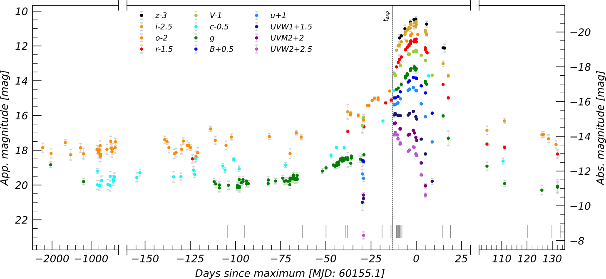
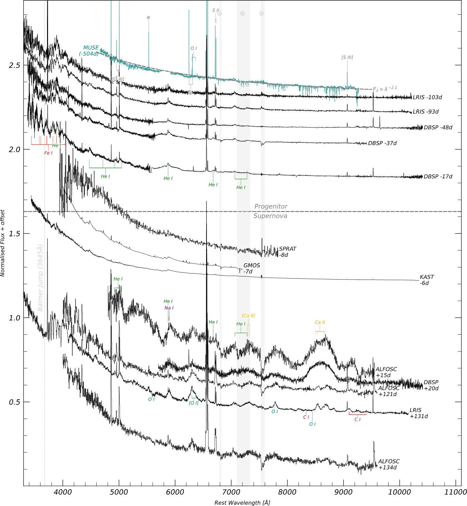
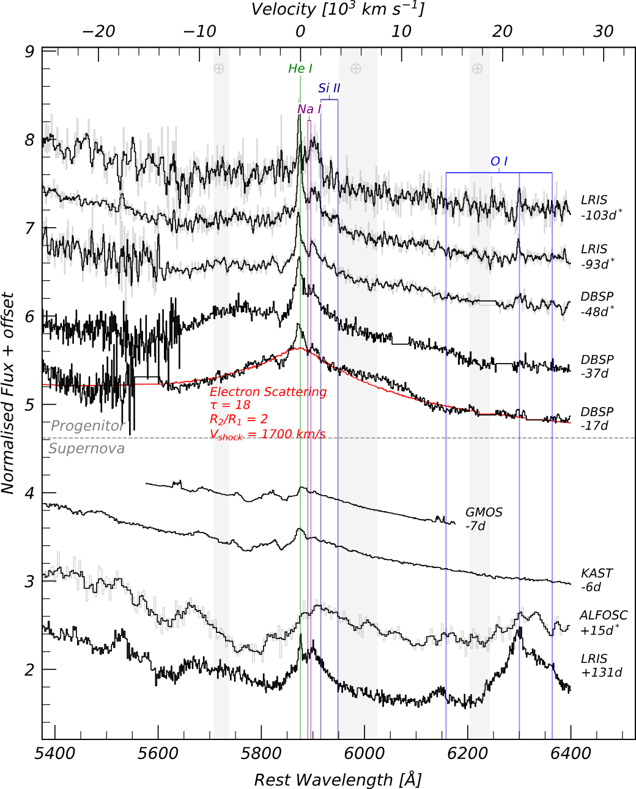

Spectroscopic observations of progenitor activity 100 days before a Type Ibn supernova
Brennan, S. J., Sollerman, J., Irani, I., et al. · Astronomy & Astrophysics 684, L18 (2024)
Overview
Background. Massive stars shed gas before they explode; Type Ibn supernovae show that material through narrow helium lines when the blast hits it. Catching the star before collapse is still unusual, and linking that signal to the final supernova tests ideas about late-stage mass loss.
Science. We use ZTF discovery plus NOT, Keck, and Gemini spectra of SN 2023fyq, including data taken about 100 days before explosion when the progenitor was already luminous and showing evolving He I lines. The sequence runs through peak and late times, where the behaviour matches a genuine core-collapse supernova and points to dense, asymmetric circumstellar material.
Impact. The work ties real pre-explosion activity to the same terminal explosion that wide-field surveys now catch end to end. That feeds models of which stars make Type Ibn events and how to interpret high-cadence transient streams from ZTF, LSST, and follow-up networks.
Key figures from the paper






Full text (PDF) inline viewer
The embedded PDF below is the same file as arXiv PDF above. If nothing appears (some mobile browsers block inline PDFs), use the PDF link in the row of buttons.
All figures arXiv HTML
These links jump to the matching figure in arXiv’s HTML article.
- Figure 1: host galaxy and transient environment (Pan-STARRS + NOT/ALFOSC inset).
- Figure 2: spectral sequence of progenitor activity and SN 2023fyq.
- Figure 3: multiband light curve (long-lived precursor and explosion).
- Figure 4: blackbody luminosity / radius / temperature evolution.
- Figure 5: evolution of He I λ5876 (P-Cygni, broad wings, electron-scattering model).